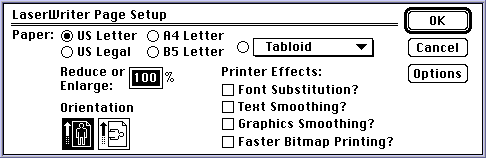
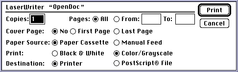
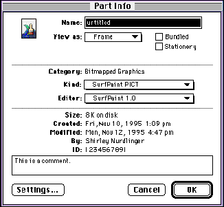
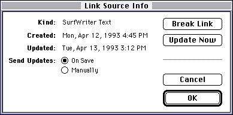
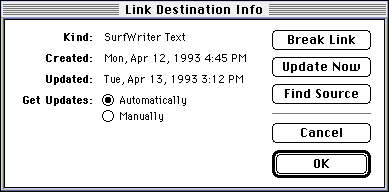

Menus
While an OpenDoc document is open, three entities share responsibility for the menu bar at any given moment. The operating system provides any system-wide menus, the OpenDoc document shell creates the Document menu and the Edit menu, and individual part editors can create other menus as needed. (Part editors can also, with restrictions, add appropriate items to the Document and Edit menus.)Different platforms have different conventions for enabling and disabling menus and menu items. In an OpenDoc document, the document shell, the root part, and the part with the menu focus together control which menu commands are available to the user. As each part becomes active, the OpenDoc document shell and the root part update their own menu items, and the active part editor takes care of the rest.
Basic event handling for menu events is described in the section "Menu Events". When the user chooses a menu item, the document shell either handles the command itself or dispatches a menu event to the active part; the part receives the event as a call to its
HandleEventmethod.This section discusses general issues of setting up and working with menus and then describes how to handle individual menu events for the standard OpenDoc menus (the Document menu and the Edit menu).
Setting Up Menus
This section describes how your part editor can set up and use menus and menu items.The Base Menu Bar
When it first opens a document, the document shell creates a menu bar object (typeODMenuBar) and installs it as the base menu bar, containing the default set of menus shared by all parts in the document. The document shell installs the base menu bar by calling the window state'sSetBaseMenuBarmethod. The base menu bar contains different menus and items on different platforms, but on the Mac OS the Apple menu, the Document menu, and the Edit menu are always installed.Adding Part Menus to the Base Menu Bar
When your part initializes itself, or when it first obtains the menu focus, it should create its own menu bar object, as follows:If necessary, your part editor can add items to the end of the Document and Edit menus, but you should avoid altering the existing items. See the section "Document Menu" and "Edit Menu" for more specific guidelines.
- It should copy the base menu bar using the window state's
CopyBaseMenuBarmethod.- It should add its own menu structures, by using menu bar methods such as
AddMenuBeforeandAddMenuLast.
- Sharing a menu bar among your parts
- You can share a single menu bar object among several instances of your part, using the Mac OS Code Fragment Manager's per-context globals. You might define a reference-counted C++ object that can hold the data, as described for palettes in the section "Sharing Palettes and Utility Windows".

Registering and Retrieving Command IDs
OpenDoc specifies menu items with position-independent command IDs so that a part can dispatch to a menu item's command handler without reference to the item's position in its menu. On the Mac OS platform, parts should register a command ID for each menu and item, using the menu bar object'sRegisterCommandmethod. For better localizability, your part editor should save the mapping from menu items to command IDs and store it in a resource.The OpenDoc document shell registers command IDs for all items in the standard menus, including the Document and Edit menus. Constants for all the standard menu command IDs are listed in the OpenDoc Class Reference for the Mac OS. If you define your own menu commands, use only ID numbers above 20000, as noted in "Mac OS Menu IDs" (next).
On the Mac OS platform, the menu event dispatched to a part contains a menu-number/item-number pair that together determine which command the user chose. To convert that information to a command ID before dispatching it to your individual menu-item handlers, call the
GetCommandmethod of the menu bar object.If you pass
GetCommanda menu-number/item-number pair that you have not yet registered, the method returns a synthetic command ID, an ID that it manufactures. Your code can test the returned command ID (by calling the menu bar'sIsCommandSyntheticmethod) and, if it is synthetic, dispatch by menu-number/item-number pair rather than by command ID. (If the user chooses a disabled item or a menu item separator, theGetCommandmethod returnskODNoCommand.)Reorganizing the Document and Edit menus on a platform without position-
independent menu-item IDs is not recommended. If your part editor does reorganize them, however, you need to re-register the command numbers so that the document shell can still handle menu items correctly.Mac OS Menu IDs
On the Mac OS platform, you must identify each menu with a menu ID. A menu ID is a positive short value; negative values are reserved by the operating system. Hierarchical menus must have IDs of 255 or less.All menus in the menu bar must have unique menu IDs. Therefore the document shell, the active part, and any shell plug-ins or services that also have menus must cooperate to ensure that there are no conflicts. Please follow the conventions shown in Table 6-3 to ensure that your menu IDs do not conflict with those of others.
Table 6-3 Mac OS Menu ID ranges Type of software Menu ID range Container applications or document shell Flat menus: 255-16383 Hierarchical menus: 0-127
Services or shell plug-ins Flat menus: 16384-20000[5] Hierarchical menus: 128-193<[5]
Part editors Flat menus: 20001-32767 Hierarchical menus: 194-255
A shell plug-in or service may have to adjust its menu ID dynamically at runtime, because another service or plug-in with that menu ID may already be installed. The plug-in should choose an ID, look for an installed menu with that ID, and--if it is found--add 1 to the ID and try again.
Obtaining the Menu Focus
When your part activates itself, it should request the menu focus (along with other foci) if it wants to use menus. See "Requesting Foci" for more information.Once your part has the menu focus, it should first call the menu bar's
IsValidmethod to check whether the base menu bar that it has copied is still valid (unchanged). If it is not, your part should recopy it and add any part-specific menus to it. Then, your part should call the menu bar'sDisplaymethod to make the menu visible and active.Enabling and Disabling Menus and Commands
When the user clicks in the menu bar, the OpenDoc dispatcher determines which part has the menu focus and calls that part'sAdjustMenusmethod. It also calls the root part'sAdjustMenusmethod, if the root part does not have the menu focus.Your part's
AdjustMenusmethod can use methods of the menu bar object such asEnableCommandorEnableAndCheckCommandto change the appearance of your menu items, or it can make platform-specific calls to directly enable, disable, mark, or change the text of its menu items. For convenience, you can also use the menu bar object'sEnableAllandDisableAllmethods to enable or disable all menus at once. In addition, you can enable or disable an entire individual menu by calling theEnableCommandmethod and passing it a special command ID such askODCommandAppleMenu,kODCommandDocumentMenu, orkODCommandEditMenu.Your
AdjustMenusmethod typically acquires the clipboard focus and enables the Cut, Copy, Paste, and Paste As items in the Edit menu. It also assigns the proper menu string to the Selection Info menu item (see page 252) and the Editor Preferences menu item (see page 257) in the Edit menu. On the Mac OS platform, it also places and enables its About Editor command in the Apple menu.Menus and Movable Modal Dialog Boxes
When you display a movable modal dialog box, you should disable all menus except for the (Mac OS) Apple menu and Application menu. If the dialog box contains an editable text field, however, you may leave the Cut, Copy, and Paste commands from the Edit menu enabled. You can accomplish this conveniently by first calling theDisableAllmethod of the menu bar, followed by individualEnableCommandcalls to reenable the individual commands you need.When you dismiss the movable modal dialog box, you must of course reenable the disabled menus.
Menus and Read-Only Documents
When your draft permissions (see "Drafts") specify that your document is read-only, your part editor needs to disable these menu commands:This situation can occur when the user views an early draft of a document, or when a document is stored on read-only media.
- Cut, Paste, Paste As, and Clear in the Edit menu
- Insert in the Document menu
- any part-specific content-editing commands
Part viewers should disable these commands at all times.
Menus and the Root Part
In all OpenDoc documents, the root part is responsible for printing. The root part therefore should handle the Page Setup and Print items from the Document menu, even if an embedded part has the menu focus.To allow the root part access to these menu events, the dispatcher passes menu events to the root part if they are not handled by the part with the menu focus. Also, OpenDoc calls the root part's
AdjustMenusmethod before it calls theAdjustMenusmethod of the part with the menu focus, so that the root part can adjust the state of those menu items.When your part's
AdjustMenusmethod is called, it should check whether your part is the root part and whether it has the menu focus. If it is the root part but does not have the menu focus, it should adjust only the Page Setup and Print items. If it is an embedded part with the menu focus, it should not adjust those items.Likewise, when your part's
HandleEventmethod is called, it should first check whether your part is the root part. If it is the root part,HandleEventshould return false if it is passed any menu events but Page Setup and Print. If it is an embedded part,HandleEventshould return false if it is passed Page Setup or Print.The Document Menu
This section describes how your part editor should interact with the Document menu. The OpenDoc document shell handles most Document menu commands, as described in "The Document Shell and the Document Menu". Individual part editors must respond only to the commands Open Selection, Insert, Page Setup, and Print. The Document menu is illustrated in Figure 12-27.If your part editor wishes to add items to or otherwise modify the Document menu when your part is active, please note the restrictions listed in the section "Document Menu" of Chapter 13, "Guidelines for Part Display." That section also gives guidelines on the appearance of the Document menu (including keyboard equivalents) and shows the dialog boxes presented to the user as a result of executing Document menu commands.
That section also gives guidelines on the appearance of the Document menu (including keyboard equivalents) and shows the dialog boxes presented to the user as a result of executing Document menu commands.
Open Selection
The user chooses the Open Selection command to open the user's selection (in an open OpenDoc document) into its own window.The active part handles this command. If the selection consists of an embedded part's frame or icon, Open Selection is equivalent to the View in Window command in the Edit menu (see "View in Window"), except that it applies to a selected part within the active frame, rather than to the active frame itself.
Your part need not support this command for intrinsic content; if it does, it can open a second window to display the selected intrinsic content.
If the selection is one or more embedded parts, you should open each one into a part window. Your routine that handles the Open Selection command should take these steps for each selected frame:
- From your private data structures, determine which of your embedded frames is the selected one. (Each embedded part, even if displayed in an icon view type, has a frame.)
- Call the
AcquirePartmethod of the selected frame, followed by theOpenmethod of the part returned by theAcquirePartmethod. TheOpenmethod is described in the section "The Open Method of Your Part Editor"Insert
The user chooses the Insert command from the Document menu to select a document and embed it as a part within your part. When the user chooses the command, OpenDoc passes the menu event to your part'sHandleEventmethod.In your routine to handle the Insert command, you should follow these steps:
Your part should disable the Insert item when its draft permissions are read-only; see "Menus and Read-Only Documents"
- Display a file-access dialog box and let the user select the document to insert. From the returned information, use your own procedures (or functions of the PlatformFile utility library supplied with OpenDoc) to obtain a file specification. Then call the storage system's
AcquireContainermethod to obtain the OpenDoc container object for the specified file.- If the file represents an OpenDoc document,
AcquireContainerreturns a non-null value. In that case, you can call theGetDocumentmethod of the container and iterate through the drafts of the document (using itsAcquireBaseDraftandAcquireDraftmethods) to get a reference to the document's latest draft.- Use that draft's
AcquireDraftPropertiesmethod to get a storage unit containing the draft's properties. From that storage unit, get a persistent reference to the root part's storage unit. Convert that persistent reference into the storage-unit ID of the root part itself (using the draft'sGetIDFromStorageUnitRefmethod).- Once you have the root part's storage unit ID, you can either embed the root part or incorporate it as intrinsic content. The procedure is essentially identical to pasting from the clipboard or other data-transfer object:
- If you are incorporating, follow the steps described in "Incorporating Intrinsic Content".
- If you are embedding, follow the steps described in "Embedding a Single Part".
- After you have inserted the document, release the objects you have created (root-part storage unit, draft, document, container) in the opposite order from which you created them.
- Notify OpenDoc and your containing part that there has been a change to your part's content; see "Making Content Changes Known".
Page Setup
The root part of the window handles the Page Setup command. Root parts are responsible for overall document features such as page size and characteristics. When the user chooses this command and your part is the root part of the active window, OpenDoc passes the command information to your part'sHandleEventmethod.Your routine to handle the Page Setup command should follow the normal procedure for displaying and storing page-setup information. If you use the Mac OS Printing Manager, for example, you take these steps:
Figure 6-1 Page Setup dialog box
- Call the
PrOpenfunction to open the current printer driver.- If you previously stored the print settings for this document, retrieve them from your part's storage unit; otherwise, create a new print record.
- Call the
PrStlDialogfunction to display the current printer's style dialog box (Figure 6-1), passing it a handle to the print record.- If
PrStlDialogreturnstrue, save the modified print record in your part's storage unit, in a property namedkODPropPageSetup.- Call
PrCloseto close the current printer driver.
For more information
- IMPORTANT
- If QuickDraw GX is installed, you must display the QuickDraw GX Page Setup dialog box instead of the Mac OS Printing Manager dialog box, even if your own part does not use QuickDraw GX for imaging.
HandleEventmethod.Your routine to handle the Print command should set up for printing. If you use the Mac OS Printing Manager, for example, you take these steps:
Figure 6-2 Job dialog box
- Retrieve any previously stored print settings (such as page-setup information) as a print record from a property named
kODPropPageSetupin your part's storage unit.- Call the
PrJobDialogfunction to display the job dialog box (Figure 6-2) for the current printer, to allow the user to set the page range and change any of the current settings.- If the
PrJobDialogfunction returnstrue(if the user does not cancel printing), your part editor should follow the procedure for printing a document described in the section "Printing".
For more information on job dialog boxes using the Mac OS Printing Manager, see the chapter "Printing Manager" in Inside Macintosh: Imaging With QuickDraw. For information on print dialog boxes using QuickDraw GX, see the chapter "Core Printing Features" in Inside Macintosh: QuickDraw GX Printing.
- IMPORTANT
- If QuickDraw GX is installed, you must display the QuickDraw GX Print dialog box instead of the Mac OS Printing Manager job dialog box, even if your own part does not use QuickDraw GX for imaging.

The Edit Menu
Most items in the Edit menu are handled by individual part editors. Most apply to the current selection in the currently active part. The Edit menu is illustrated in Figure 12-28 and Figure 12-30.If your part editor wishes to add items to or otherwise modify the Edit menu when your part is active, please note the restrictions listed in the section "Edit Menu". That section also gives guidelines on the appearance of the Edit menu (including keyboard equivalents).
Undo, Redo
The user chooses the Undo or Redo command from the Edit menu to reverse the actions of recently executed commands, including previous Undo or Redo commands.The document shell handles the Undo and Redo items, passing control to the undo object. The undo object, in turn, calls the
UndoActionorRedoActionmethods of any part editors involved in the undo or redo.Your part should respond to these commands as described in the section "Undo"
Cut, Copy, Paste
The user chooses the Cut, Copy, or Paste command from the Edit menu to place data on the clipboard or to retrieve data from the clipboard.Your part should handle the Cut and Copy commands as described in the section "Copying or Cutting to the Clipboard". Your part should handle the Paste command as described in the sections "Handling Pasted or Dropped Data" on page 336 and "Pasting From the Clipboard".
Your part should disable the Cut and Paste items when its draft permissions are read-only; see "Menus and Read-Only Documents"
Paste As
The user chooses the Paste As command from the Edit menu to specify how clipboard data is to be pasted into the active part. When the user selects the command, OpenDoc passes the command information to your part'sHandleEventmethod.Your routine to handle the Paste As command should prepare to read from the clipboard, like this:
- Acquire the clipboard focus and gain access to its content storage unit, following the initial steps described in "Pasting From the Clipboard".
- Display the Paste As dialog box (see Figure 8-3) by calling the
ShowPasteAsDialogmethod of the clipboard object. Pass the function the active frame into which the paste is to occur.- If the method returns a result of true, the user has pressed the OK button; use the results of the interaction (passed back to you as a structure of type
ODPasteAsResult) to determine which kind of pasting action to take. The section "Handling the Paste As Dialog Box" lists the kinds of pasting that the user can specify. Then read the appropriate kind of data from the clipboard, continuing with the procedures shown in the section "Pasting From the Clipboard" on page 360.Your part should disable the Paste As item when its draft permissions are read-only; see "Menus and Read-Only Documents"
- Drag and drop
- Your part editor's
Dropmethod can also display the Paste As dialog box. See "Dropping" for more information.Clear
The user chooses the Clear command from the Edit menu to delete the selected content from the active part.Your routine to handle the Clear command should remove the items that make up the selection from your part content. That may involve deleting embedded parts as well as intrinsic content. See, for example, "Removing an Embedded Part".
Your part should disable the Clear item when its draft permissions are read-only; see "Menus and Read-Only Documents"
Select All
The user chooses the Select All command from the Edit menu to make the current selection encompass all of the content of the active part.Your routine to handle the Select All command must include all of your part's content in the selection structure that you maintain, and it must highlight the visible parts of it appropriately.
Selection Info
The user chooses the Selection Info command from the Edit menu to display a dialog box containing standard information about the current selection, whether it is an embedded part, a link source, a link destination, or intrinsic content. When the user chooses the command, OpenDoc passes the command information to your active part'sHandleEventmethod. Your routine to handle the Selection Info command should display a dialog box that describes the characteristics of the current selection.Even before the user chooses this command, your part needs to make sure that the menu item contains the correct text. Whenever your part is made active, and whenever the selection changes, your
AdjustMenusmethod should update the name of this menu item as follows:
- If the current selection consists of an embedded frame, set the name of the menu item to "Part Info...".
- If the current selection consists of a link border (either source or destination), set the name of the menu item to "Link Info...".
- If the current selection contains intrinsic content of your part, and if you support an Info dialog box of your own, set the name of the menu item to "myContent Info...", where myContent is a brief, meaningful word or phrase describing the selection content.
- If there is no selection or insertion point, set the name of the menu item to "Part Info..." and disable the menu item.
In your routine to handle the Selection Info command, you can take the following steps, depending on which of the above four selection states prevails. In general, you determine what the current selection is and act accordingly.
- Noncontainer, nonlinking parts
- If your part supports neither embedding nor linking and does not provide a dialog box to give information on selected intrinsic content, it should at all times set the name of the menu item to "Part Info..." and disable it.
Figure 6-3 The Part Info dialog box
- If the current selection is an embedded frame border, display the Part Info dialog box for the part in that frame, using the
ShowPartFrameInfomethod of the Info object (classODInfo). You obtain a reference to the Info object by calling the session object'sGetInfomethod. Figure 6-3 shows an example of the dialog box. OpenDoc handles all changes made by the user and updates the information in the storage units for the embedded part and frame, including performing any requested translation.OpenDoc determines the information it displays in the Part Info dialog box by reading the part's Info properties, the set of properties--separate from the part's contents--that can be displayed to, and in some cases changed by, the user. All stored parts include them. If your part creates an extension to the Part info dialog box (see "The Settings Extension"

Figure 6-4 The Link Source Info dialog box
- If your part supports linking and the current selection is the border of a link source, obtain from your own data structures a reference to the appropriate link-source object and then display the Link Source Info dialog box, using the
ShowLinkSourceInfomethod of the link-source object. Figure 6-4 shows an example of the dialog box.
You can either permit or prohibit changes to the displayed information; if your draft is read-only, OpenDoc automatically prohibits any changes. If you allow changes and the method returns true, handle the results like this:Figure 6-5 The Link Destination Info dialog box
- If the user has decided to break the link, release the link source as described in the section "Breaking and Cutting Links".
- If the user has decided to update the link immediately, update the link source from your part's content. See "Updating a Link at the Source" for procedures to follow. (This option is available only if the auto-update setting is Manually, and if the update ID you passed to
ShowLinkSourceInfodoes not match the update ID in the link-source object.)- The default auto-update setting for a link source is On Save. If the user has decided to change the auto-update setting from On Save to Manually, change the auto-update status of the link source accordingly.
- If the user has changed the auto-update setting from Manually to On Save (but has not explicitly decided to update immediately), change the auto-
update status of the link source accordingly. Then obtain the update ID from the link source (by calling itsGetUpdateIDmethod) and, if it is different from your currently stored update ID for the source content, store the new ID and update the link source.- If your part supports linking and the current selection is the border of a link destination, obtain from your own data structures a reference to the destination's link object and a pointer to the link info structure associated with it. (See "Link Info".) Then display the Link Destination Info dialog box, using the
ShowLinkDestinationInfomethod of the link object. Figure 6-5 shows an example of the dialog box.
You can either permit or prohibit changes to the displayed information; if your draft is read-only, OpenDoc automatically prohibits any changes. If you allow changes and the method returns true, handle the results like this:
- If the user has decided to break the link, release the link as described in the section "Breaking and Cutting Links".
- If the user has decided to update the link immediately, update your part's content from the link data. See "Updating a Link at the Destination" for procedures to follow. (This option is available only if the auto-update setting is Manually, and if the update ID in your link info structure does not match the update ID in the link object.)
- If the user has decided to view the source of the link, call the link object's
ShowSourceContentmethod.- If the user has changed the auto-update setting of the link, update your link info structure accordingly. If the change is to specify automatic updating, and if your part is not already registered for updates to other destinations of the same link, call the link object's
RegisterDependentmethod so that your part will be notified when updates occur.- If the current selection is a portion of your part's intrinsic content and your part supports one or more Info dialog boxes of your own, you can display the appropriate dialog box and handle user selections yourself.
- If there is no current selection, or if the selection is intrinsic content and your part does not support its own Info dialog box, no selection information is available. You should have disabled the menu item as described at the beginning of this section, in which case your method to handle the Selection Info command is not called.
Editor Preferences
The user chooses the Editor Preferences command from the Edit menu to bring up the Preferences dialog box in which the user can view and change preferences for the part editor of the active part.Even before the user chooses this command, your part needs to make sure that the menu item contains the correct text. Whenever your part is made active, your
AdjustMenusmethod should update the name of this menu item to "myEditor Preferences", where myEditor is the name of your part editor.Your routine to handle the Editor Preferences command should display a dialog box whose contents show the user-controllable global settings that affect all of your part editor's parts. Figure 12-29 shows an example of a Preferences dialog box.
View in Window
The user chooses the View in Window command from the Edit menu to open the active part in its own part window. When the user chooses the command, OpenDoc passes the command information to your part'sHandleEventmethod.Your routine to handle the View in Window menu command should take steps like these:
Do not call your part's own
- Check whether the window already exists. If you have created the part window previously and saved its window ID, pass that ID to the
AcquireWindowmethod of the window state object. If the method returns a valid window, bring it to the front.- If the window does not currently exist, create a platform-specific window and register it with the window state object, as described in the section "Creating and Registering a Window". Get its window ID and save it for future reference.
- Open and bring the window to the front, as described in "Opening a Window".
Openmethod in this situation.When you create the part window, size and position it as recommended in the section "Viewing Embedded Parts in Part Windows". You can also add an item to the Edit menu to display a movable outline of your part's frame in the window, as described in the section "Show Frame Outline" (next).
Show Frame Outline
Your part should add the Show Frame Outline command to the Edit menu when your part's content area is greater than the area of its display frame, the frame is opened into a part window, and the part window is active.The user chooses this command to reposition your part's content--that is, to change the portion of it displayed in the frame in the document window. In the part window, display a 1-pixel-wide black-and-white border around the content currently visible in the display frame in the document window, and allow the user to drag the frame outline. See the section "Repositioning Content in a Frame" for more information and illustrations.
[5] Dynamically assigned